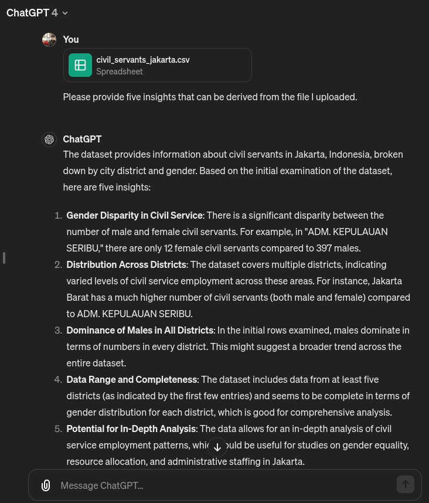

AI-Driven Insights. The project lacked AI-generated
insights due to the absence of generative text capabilities. While data
collection was robust, the ability to derive actionable insights
directly from the data using AI was missing.
AI-Generated Recommendations for Targeted Actions.
While the visualisations provided valuable insights, AI could be use to
recommend specific interventions or prioritize actions based on the
identified needs.
Automated Data Processing. The project may have faced
challenges with manual data processing and analysis. AI-driven
automation could have streamlined these processes, allowing for faster
decision-making and more efficient utilization of resources.
2. Realistic Possibilities with AI
By integrating AI-generated text, starting small and building on past
successes allows for incremental adoption and maximizes the impact of AI
integration.
2.1. Akvo’s Internal
Integration of AI-Generated Text
Provide a Channel for Data Analysis and Insights
Example: Integrating OpenAI API into Slack for flexible and time-cost-effective Data Analysis

2.2. Partners
Enhancing Existing / Upcomming Projects with AI
Reflect on Past Successes and Identify Opportunities for Enhancement
Example: Implement AI-Generated Text for Chatbots to Provide Personalized Recommendations for better user experience
3. Next Steps
3.1. Short-Term
Set Up Free ChatBot Channel: Initiate a Free ChatBot
Channel in Slack as a Realistic First Step. Efforts are Manageable,
Serving as a Starting Point for Further AI Exploration
Invest in Developer Learning: Provide Learning Opportunities for Developers to Acquire AI Development Expertise
Explore Project Opportunities: BD Teams to Identify Project Opportunities as Starting Points for Partner Offerings
3.2. Long-Term
Contribute Data to OpenAI: Utilize Akvo Flow, Akvo
RSR, and Other Platforms to Contribute to OpenAI’s Data Pool. Example:
Referencing the Potential of Data Contribution to OpenAI as Demonstrated
in https://www.youtube.com/watch?v=eNKu307k59g
Integrating AI into Akvo's Offerings and Internal Operations